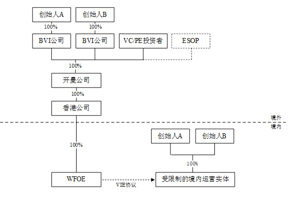
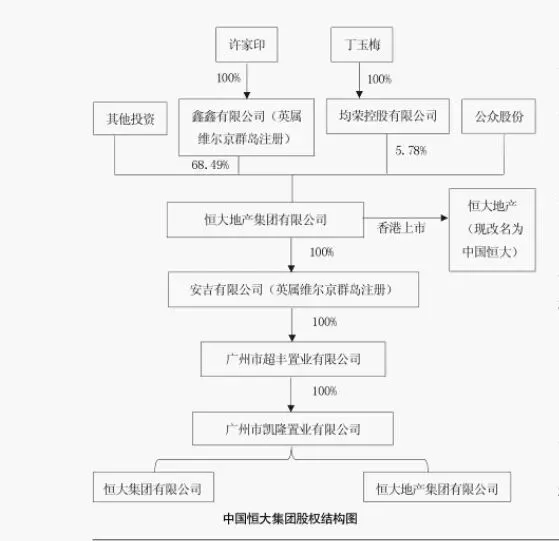

让许家印掏钱救恒大
过去的两个月，我们见过太多恒大说的漂亮的场面话了。
很多人表示，干嘛不让许家印掏钱救恒大，恒大缺钱，他又不缺钱。我们今天就从各方面探讨一下这个建议的可行性。
NO. 1｜壹
保交楼的誓师大会、财富暴雷时“一无所有”的名场面、再到恒大集团复工复产专题会上宣布化解风险自救的三大战略决定：
坚定不移、全力以赴实现复工复产保交楼；全面实施现楼销售、大幅压降房地产开发建设规模；10 年内实现由房地产业向新能源汽车产业的转型。
还是那个熟悉的恒大，漂亮的场面话，一点也没变。只是口号喊得再响亮、愿景再美好，绕来绕去，还是离不开“钱”这一核心，没有资金支撑，一切都是空中楼阁。
高层发声定调：
恒大集团管理不善，未能根据市场形势变化审慎经营，反而盲目扩张，造成经营和财务指标严重恶化，最终爆发风险。
房地产行业总体是健康的。恒大集团的问题在房地产行业只是个别现象。其风险对金融行业的外溢性可控。
简单的几句话，直接点出恒大的问题，这个问题是恒大自个造成的。2016年底，恒大总资产1万亿，股东净资产660亿，大约15倍杠杆，而行业的平均杠杆率在4-6倍。
2017年，恒大先后三轮引入1300亿战投，后来几年又跨行业进入新能源等行业。在高层定调去杠杆、万科高喊“活下去”后，恒大依然在耗费巨资买买买。
从恒大过往一系列高调的行径来说，高层的定调并没有冤枉恒大。这个定调对恒大来说，显然不是什么好消息。
NO. 2｜贰
一个烂苹果，就不要包装成新鲜果蔬卖高价。
但恒大显然不是这想的。从过往的行径来看，颇有“把烂苹果卖出鲜果的高价才是本事”的味道。
这是家信誉和契约精神很弱的企业：
2014年，东风日产启辰购买了广州恒大两个赛季年的胸前广告，合同期是2014年2月1日至2016年1月31日，为此东风日产支付给恒大一共1.6亿元。
2014年10月中超联赛最后一个主场，广州恒大对阵北京国安，恒大在东风日产没有同意的情况下，强行将球衣广告换成了旗下的奶粉广告；
2015年11月21日，亚足联冠军联赛决赛中，恒大在东风日产没有同意的情况下，强行将球衣广告换成恒大人寿的广告。
合同已经签订，想换就换，没有信用，没有契约精神。后来，司法机关判恒大赔付2477.86万元。
2020年9月，恒大辟谣债务相关文件，这是恒大的信誉在社会公众中，第一次大规模破裂和丧失；
2021年初，恒大和一众投资者签订千亿债转股，这是恒大在金融机构中，信誉消耗殆尽；
2021年5-7月，恒大商票事件愈演愈烈，恒大一边辟谣，一边无力兑付大量逾期商票，恒大在供应商中信誉消耗殆尽；
2021年9月，恒大财富暴雷，恒大的高管们先跑，一众员工被套。这是恒大在职工中，信誉消耗殆尽。
2021年9月、10月，恒大分别两次强调“保交楼”。多次信誉消耗殆尽的恒大能不能在业主中挽回一丝信誉，全看交楼是否能完成了。
9月份，恒大公告称，受负面舆情影响，恒大地产销售额持续下滑，现金流危机进一步告急。 恒大把自己房子卖不出去的锅甩给负面新闻，但一切危机的源头，都在恒大自身。
恒大地产的销售额也陡然下滑，销售额减少，回款自然也骤减，钱根愈紧。
事情发展了好几个月，我们也始终未见恒大处理优质资产，恒腾网络、嘉凯城.....都属于边角料。
恒大集团和朱孟依的合生，达成的恒大物业股权出售事宜，也因为恒大方面的原因，黄了。
恒大的信誉在接盘者中，再次跌到了低点。
NO. 3｜叁
从上面一系列历史事件来看，可以说，现在的恒大，从金融机构、供应商、员工、潜在客户、接盘方几条路，都很难再获取资金支持。
那么，恒大上市至今多次大额分红691.85亿元，许家印家族通过离岸公司持股超75%，分红529.65亿元。
能不能让许家印把这部分钱掏出来缓解恒大的债务危机？
这就不得不说到恒大集团在港交所上市，所采用的VIE架构。
大陆企业在香港上市，除了借壳上市外，还主要有两种模式，一种是H股模式，另一种是红筹架构模式（包括红筹架构下的VIE模式）。
VIE结构，是Variable Interest Entity的简称，即“可变利益实体”，国内普遍称呼为“协议控制”。
VIE结构是实现公司控制与合并财务报表的方式之一，通常是指境外特殊目的公司通过其在中国的全资子公司（外商独资企业WFOE）以 协议控制的方式 控制一家境内运营实体公司，从而实现境外特殊目的公司对境内运营实体公司的并表，进而境外特殊目的公司得以在境外融资或上市的运作模式。
首先，公司进行境内重组，此时可根据公司的需求按照不同区域或板块分类，在重组时需把从事《负面清单》规定的行业的公司单独区分，以便于境外架构搭建后以VIE结构控制该公司。
然后在境外搭建架构，即公司股东在境外设立一系列的BVI公司、开曼公司、香港公司（(香港公司的设立主要为了税收优惠），以及WOFE（外商独资企业）。
当境内重组及境外架构搭建完成后，WOFE与受限制的境内运营实体及其股东签订一组协议，具体包括：《独家管理咨询服务协议》、《股权质押协议》、《独家购买权协议》、《股东承诺函》、《投票权协议或股东委托投票代理协议》、《股东配偶承诺函》。
最终，通过一系列的VIE协议，开曼公司及BVI公司最终能通过协议控制受限制的境内运营实体及其股东，使其可以按照外资母公司的意志经营、分配、转移利润，最终在完税后将经营利润转移至境外母公司。
VIE架构股权结构图如下：

已知，恒大VIE的股权架构如下：

那么，想从公司层面，让许家印从口袋中掏出已经分红到手的钱，难比登天。
境内（大陆）的恒大企业，从天眼查上的信息来看，许家印目前无一挂职。唯一的一家恒大地产集团有限公司，法人已经在前两个月变更成赵长龙。
也就意味着，在大陆的恒大系企业，目前尚无法在企业层面上，追究许家印的责任。
而许家印挂职的中国恒大集团董事局主席，是采用VIE架构，在香港上市。即恒大通过VIE，以协议控制大陆的恒大系企业。
大陆的恒大系企业，无法直接追责到许家印。那么，只能从香港或境外追责，这个难度很大，唯一的突破口是查恒大的经营是否造假。造假则可以处于巨额罚金。
恒大的财技，不过多评价。我们仅说一项负债，恒大财报里显示的是1.97万亿，即表内负债。
表外债务，就是没有计入恒大财报里的债务。这部分债务主要就包括恒大理财等其他非常规渠道的债务。这部分债务是没有计入表内债务的。
上市公司造假一般分为十类：
虚增收入；提前或推后确认收入；少记/转移费用；提前或推后确认费用；增加非经常性损益；通过资产减值损失调节利润；通过资产重组向上市公司输送利益；藉助关联交易操控利润；虚增资产；隐瞒负债。
最近一则消息很有意思：近日，恒大核算师普华永道被查，涉及恒大集团2020年度账目。
NO. 4｜肆
若是在香港的上市主 体 中国恒大集团也没有查出问题。 那么，只能从道德层面寄希望于许家印掏钱了。
或许你想说，恒大都没钱了，许家印肯定也没钱。我信你个大头鬼：
2006年3月，许家印在中国香港注册成立了巨山有限公司（以下简称“巨山”）和源讯有限公司（以下简称“源讯”）。
2009年，当恒大在香港成功上市，许家印走出财务危机时，他通过巨山和源迅购买了布力径10号B洋房和C洋房。 目前布力径10号B洋房和C洋房的市场价约为7亿港元和8亿港元。
今年7月，恒大财务危机愈演愈烈时，许家印悄然卸任了巨山和源讯的董事，接替他的人名叫谭海军。据悉，谭海军是“许府管家”，负责许家印大小事务。
2014年，Golden Fast FoodsPty以3900万澳元的价格购买了 海湾风景的 海边豪宅Villa Del Mare。许家印是 Golden Fast FoodsPty 公司的实际控制人。
2015年，因非法购买，该豪宅被要求出售。许家印将这栋豪宅转给了神秘的华丽女商人王丽。王丽生于中国，拥有澳大利亚国籍。许家印和王丽避开了房地产中介，进行了私人出售。“交易进行得相当迅速，而且是在公司内部完成的。”
2015年，许家印购买了一艘由荷兰设计师设计的游艇，这艘巨型游艇长度达到60米，名为“Event”。Amels曾以6700万欧元的价格推出了一款与Event类似的船。
许家印拥有两架私人飞机，其中一架是湾流(Gulfstream) G450，售价高达4300万美元，另一架是空客A319，这是一架商用客机，可容纳160人，售价高达9000万美元。
许家印还拥有两辆劳斯莱斯幻影。其中一辆悬挂“粤A98888”牌照，另一辆悬挂“HK3333”牌照。有意思的是，许家印的首家上市公司——中国恒大的股票代码也是“03333”。
“只吃进口水果，喝皇家礼炮兑苏打水”的许家印，也曾想过“青史留名”。
不知许老板有没有想过，有一天，自己和恒大会以这样负面的形象在历史上留下一笔。
本月，“下周回国”的贾跃亭，已经开始给离职的法拉第员工补发曾经拖欠的工资了。
不知，“一无所有”的许家印，何时才能有点实际行动？让员工、供应商、业主们不至于一无所有。
按日期浏览全部来源（同日按条目标识排序）